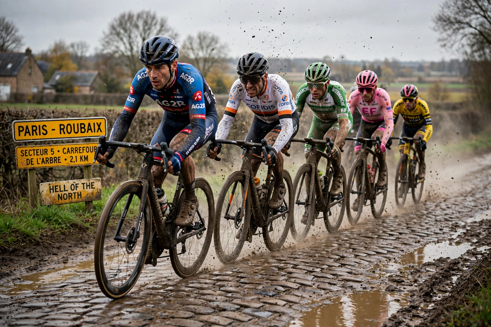

Paris–Roubaix is a one-day professional cycling race in northern France, starting near Paris (now Compiègne) and finishing in Roubaix. First held in 1896, it is one of cycling's five Monuments and is famous for its brutal cobbled sectors (pavé).

Nicknamed "the Hell of the North" — originally for the devastated post-WWI landscape — and "Queen of the Classics", the race includes notorious sectors such as the Trouée d'Arenberg, Mons-en-Pévèle and the Carrefour de l'Arbre, before finishing in the Roubaix velodrome. The winner receives a cobblestone trophy. A women's race, Paris–Roubaix Femmes, began in 2021.
The race was created to publicise the new Roubaix velodrome. It survived both world wars (with interruptions) and became a spring classic held each April as part of the UCI WorldTour.
See also: Tour of Flanders, Monuments